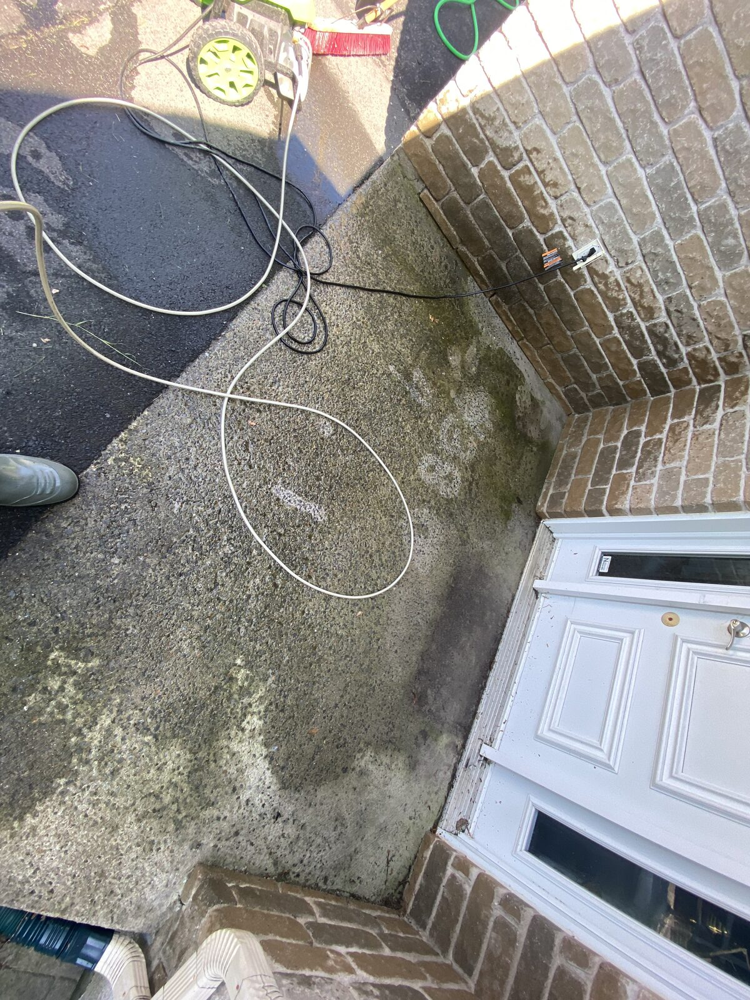
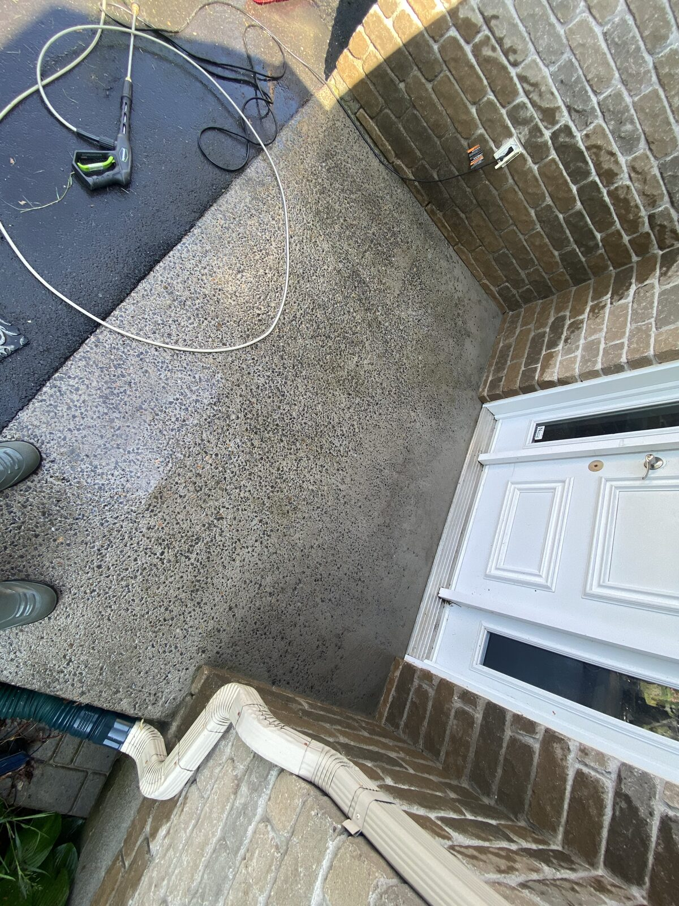

Redonnez une seconde vie à vos surfaces extérieures. Résultats visibles dès le premier passage.
Le nettoyage à pression va bien au-delà de simplement rincer une surface. Notre spécialité est la restauration du sable polymère sur vos surfaces en pavé-uni : nous nettoyons en profondeur les joints, éliminons les mauvaises herbes et remplissons à neuf avec du sable polymère de qualité — un service étroitement lié à l'entretien de votre pavé-uni.
Notre service phare. Nous nettoyons à haute pression les joints de vos pavés pour retirer le sable dégradé, les mauvaises herbes et les débris, puis nous remplissons à neuf avec du sable polymère — protégeant vos pavés contre l'eau, les insectes et la végétation indésirable.
Voir aussi : Entretien Pavé-UniNettoyage en profondeur des terrasses en bois, composite ou pavé. Élimination des moisissures, algues, taches et saletés incrustées.
Décapage et nettoyage des murs extérieurs, fondations, clôtures et façades pour retrouver un aspect propre et neuf.
Nettoyage en profondeur de vos allées piétonnes et sentiers en pavé-uni. Retrouvez une surface propre, nette et sans mauvaises herbes dans les joints.
Le nettoyage à pression transforme vos surfaces en quelques heures seulement.


Contactez-nous pour une évaluation gratuite. Nous vous indiquerons les traitements adaptés à vos surfaces et vous fournirons une soumission claire.
Demander une soumission gratuite